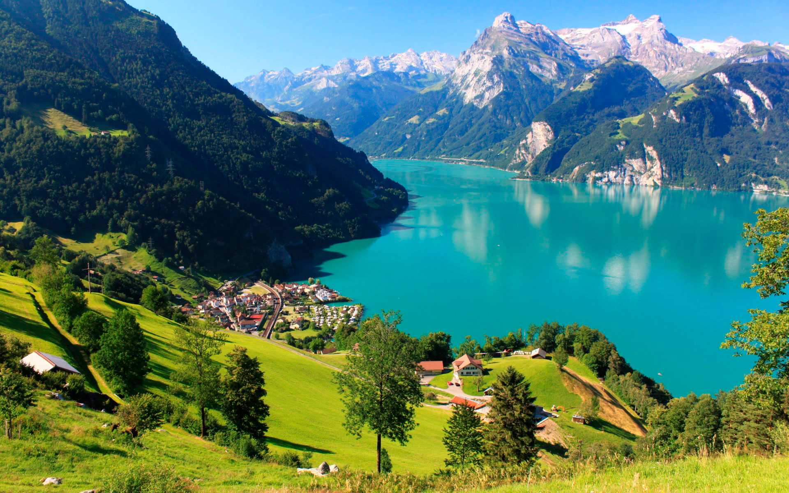
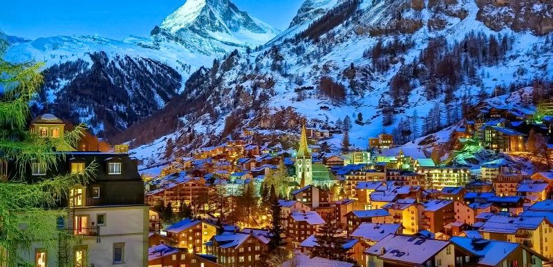

Швейцарія — найбільш гориста країна Європи.
Швейцарію можна по праву назвати гірською країною, адже Альпи займають 65% території країни. Найвища точка — гора Дюфур, 4634 метра. Крім того, на території Швейцарії розташовується 208 гір, висота яких перевищує 3000 метрів. А от найвідомішою горою країни є Маттерхорн (4478 м), яку зображують на упаковці шоколаду «Тoblerone». Гора є дуже красивою, схожа на засніжену піраміду. До слова, піднятися на її вершину до цих пір дуже складно, це роблять лише досвідчені альпіністи.
Клімат
Він також контрастний як і природа. У Швейцарії зустрічаються і тропіки, і Арктика. Роль кліматичного бар’єру виконують Альпи, вони ж і влияниют на клімат. У північній і центральній частині із-за впливу Атлантики зими суворі, а в південній частині клімат сонячний, м’який і середземноморський. Значними коливаннями відрізняється погода в різних частинах Альп. Рясні дощі характерні для високогірних областей. Сонячний і порівняно сухою переважає в альпійських долинах. Загалом, клімат Швейцарії помірний. Для цієї країни не властиві крайні прояви холоду, жари або вологості. Температура в липні-серпні складає 18-27 оС, а в січні-лютому клеблется в межах від – 1 до 5 оС. Місце розташування над рівнем моря впливає на температуру.
Історія та цікаві факти
Територія Швейцарії була заселена ще в кам’яному столітті. У період існування й розквіту Римської імперії (з 5 століття до н. е. до 4 століття н. е.) тут жили кельтські племена (гельвети). Схід Швейцарії був заселений ретийцами, які були споріднені до етрусків. У 2 столітті до н. е місцеві племена здійснювали набіги на Римську імперію і навіть завдали римлянам кілька поразок. Швейцарія була підпорядкована в 52 році до н. е, коли було придушене повстання галлів проти влади Риму. У 3 столітті н. е римляни починають втрачати свої позиції під натиском німецьких племен. До 5 століття північ Швейцарії захопили алемани, а захід – бургунди.У Середньовіччі Швейцарія була роздроблена на кілька королівств, які були підпорядковані франками в період правління Карла Великого у 8 столітті. Християнізація населення почалася в 4 столітті. У 843 році територія Швейцарії була розділена між Італією і Німеччиною. На початку 10 століття вся територія країни була підпорядкована німецькими королями та в 1032 році увійшла до складу Священної Римської імперії, під владою якої залишалася протягом 3 століть.У 11-13 столітті у Швейцарії розвивається торгівля та з’являються нові міста. Це стало причиною появи нових торгових шляхів. Одна з головних торгових артерій Швейцарії мала величезне значення й проходила через долини Урі, Швіц, Граубюнден і перевал Сен-Готард. У цей період до влади у Священній Римській імперії прийшли Габсбурги. Побоюючись їх притиснень, 1 серпня 1291 був укладений військовий договір, який об’єднав Урі, Швіц і Унтервальден. Ця дата вважається початком швейцарського Союзу і швейцарської державності. У 14 столітті Габсбурги неодноразово намагалися взяти кантони під контроль, але зазнали кілька поразок.У 14 століття склад швейцарського Союзу поповнився Цюрихом, Люцерном і Берном. Це призвело до зростання напруги між кантонами, яке вилилося в Цюріхську війну. Цікаво, що великі міста у складі конфедерації отримували статус вільних, мали широку автономію і вели жваву торгівлю з іншими містами Європи. У 15 столітті до Швейцарського союзу приєдналися нові кантони. У 1499 році Священна Римська імперія спробувала повернути контроль над непокірними територіями, але зазнала поразки. До речі, приблизно в цей період були закладені перші принципи швейцарського нейтралітету.У 1848 році у Швейцарії була прийнята нова конституція. З 1850 року єдиною валютою став франк, а столицею Берн. У 1844 році була прокладена перша залізниця з Базеля в Страсбург. У Першій і Другій світовій війні Швейцарія зайняла сторону військового нейтралітету. Хоча в період Другої світової війни співпрацювала з фашистами. У 1999 році була прийнята нова конституція. В цей час Швейцарія є однією з найбагатших країн світу. На її території працює одна з найбільших фізичних лабораторій — ЦЕРН. Також Саме у Швейцарії відбулося народження Інтернету. Тут був розроблений перший сайт, браузер і вебсервер.
Регіональна кухня
Швейцарська кухня, завдяки частинам країни з різними мовою і культурою, має впливи італійської, німецької та французької кухні. Відомі страви включають раклет (страва з плавленого сиру сорту Раклет), сирне фондю, альпійські макарони (макарони з сиром), цюріхський шніцель, рьості (картопляні оладки розміром з пательню) та інші страви. У південній частині Швейцарії, популярні полента і різотто. Крім того, Швейцарія відома багатьма різновидами сиру та шоколаду. Для поціновувачів напоїв варто скуштувати швейцарські вина, які (майже) не експортуються за межі країни.
Міста:
- Берн — в столиці Швейцарії збереглося велике і прекрасне «старе місто».
- Базель
- Женева — друге за величиною місто країни і головний міжнародний центр для мистецтва, культури і політики — в місті знаходяться близько 200 урядових і неурядових організацій.
- Інтерлакен
- Лозанна
- Лугано
- Люцерн
- Цюрих — банківський центр і найбільше місто у Швейцарії. Вирізняється жвавим нічним житттям.